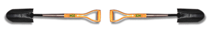

Technical Imaging Applications
A Virtual Learning Lab in the Social Sciences

Portfolio Requirements
SBSC 395: Section 1A: 2 Hours
Fall 1996

Professor Ruben G. Mendoza, Ph.D
Archaeologist/Photographer
Portfolio Format and Content Requirements
Portfolio Format: All students will be required to submit a portfolio
of those materials assembled through the course of this semester. All term
deliverables are to be assembled in a portfolio binder consisting of (a)
black or white 1.0" or 1.5" vinyl-covered three-ring binder (preferably
with a transparent overlay for a cover page insert), and should include
(b) a clearly formatted cover page including course title and section number,
the student's name, semester and date, telephone number and e-mail address,
and actual date at which the portfolio was submitted (to be included as
a page insert within the top cover of the portfolio binder and in addition
inserted into the first page of the bound portfolio); (c) a table of contents
listing all inserts and deliverables, (d) all self and instructor assessments,
term deliverables and projects inserted within transparent page sleeves
for the protection of each deliverable or assignment included in the portfolio,
(d) tabbed section dividers (color-coded or labeled), and (e) appropriate
transparent sleeves for any cassette, diskette, or video recordings or electronic
documents that you may plan to include in your portfolio. Note: No other
attachments should be included or inserted into the final portfolio submitted
for end term evaluation. In addition, all documents entered into the final
portfolio are required to include your name, course section number, and
a date of submission placed in the upper right hand corner of each and every
page submitted. In the lower right-hand corner of each and every page (excluding
the title page), page numbers should be clearly and accurately listed.
Final Photographic Portolio: The final photographic portfolio should
represent your best efforts to capture those images that convey the utility
of documentary and investigative photography applications in the social
sciences. As such, your final portfolio should contain clearly captioned
images which specifically reflect your efforts to document a "culture"
and or cultural "theme" of California's central coast. The photographs
that you select for the final portfolio should reflect the lifeways, customs,
or attributes of an existing community, subculture, or archaeologically
and historically identifiable body of material culture and or documentation
of an event or circumstance in which photographic evidence may be used for
the purposes of reconstructing a cultural or social "scene" (e.g.
crime scene or forensic evidence). The final portfolio should consist of
no less than twelve 5"x7" or eight 8"x10" photographic
prints complete with typewritten caption information that documents the
culture, scene or body of evidence in question (i.e. in addition to the
specific caption information that serves to identify the social and cultural
dimensions of the scene documented, you should also include the name of
the photographer, date that the image was produced, the camera and lens
used, technical information, type of print (e.g. "R-print"), location,
subjects, and information pertaining to whether or not the photos in question
were printed by yourself or a custom lab). Ultimately, your portfolio should
provide sufficient information and focus so as to stand as a photographic
essay of a specific culture or cultural theme. Because digitized images
submitted on-line seldom approach the technical quality necessary for final
evaluation, the final portfolio must be submitted with photographic prints
in the specified formats noted above.
On-Line Submissions: The Virtual Learning Lab requirement permits
the submission of on-line deliverables by way of the drop folders assigned
to SBSC 395 so long as you have followed the same standards required of
all submissions (i.e. organized by way of a table of contents, caption information,
and cover statement; with all electronic documents titled with your name,
section number, date of submission, deliverable number and subjectmatter
studied). Scanned images of photographs produced as per the assignments
scheduled may be submitted via on-line drop folders so long as these are
submitted as PICT files (other formats may not download), and it is understood
that all on-line assessment is ultimately dependent on the submission of
a final photographic portfolio that adheres to the requirements for the
final portfolio noted above (i.e. 5x7" or 8x10" black and white
glossy prints and 35mm or larger format color transparencies submitted in
an 8.5x11" black or white binder with cover insert, title page, and
related materials as noted). Where typewritten documents are concerned,
these should be submitted via QuickMail or First Class e-mail, and produced
in Microsoft Word, Excell, Powerpoint, etc. for the MacIntosh. If you are
using an IBM, the primary requirement is that you both e-mail and provide
a diskette copy backup of your materials so that these can be converted
for downloading and assessment. Other programs, platforms, and equipment
for the digital manipulation of your images (i.e. scanning and electronic
editing) are available in the computing labs of the SBSC and Media Learning
Center at CSUMB.
Webmaster: Professor Ruben G. Mendoza, Ph.D. Web site originally
posted: August 26, 1996. All content authored and copyrighted by Professor
Ruben G. Mendoza. All citations should follow internet
bibliographic format noted here.